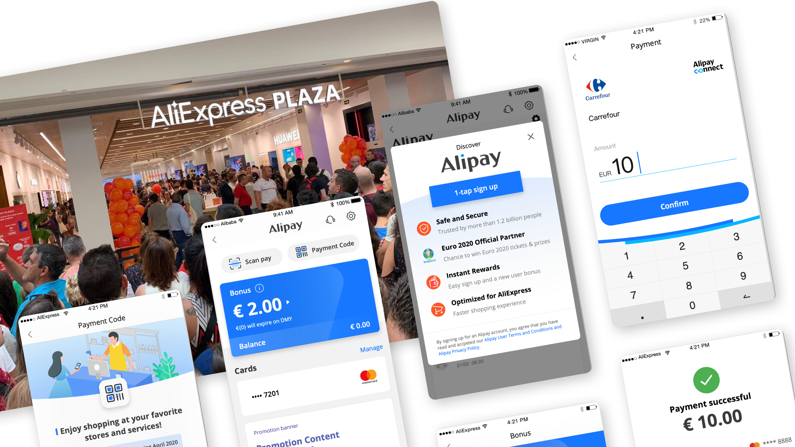

User acquisition of AliExpress Wallet in Europe
Design for simplified mental model for better adoption in a new market, connecting offline consumers to online business.
About the project
AliExpress is second leading cross-border e-commerce platform in Europe, especially in countries like Spain, France, Poland, Italy. With online business and user numbers meeting barrier, AE is looking for ways to grow its business out of the online world.
Unlike China and many Asian countries, online retailer only makes up a very small portion of all retailer business and people still conduct their "offline consumer behavior" a lot. The company is hoping to leverage offline consumer acquisition and convert them to online AliExpress users with promotions.

Product and goals
To connect physical stores to online business, one of the key connections are funds. Alipay as the affiliated company with AliExpress, has got licence with its Luxembourg entity and has got existing merchant coverage. Therefore the company planned to launch an e-wallet built in AliExpress to help absorb offline consumer to online business.
User problems
Before moving on with design, the business strategy faces some obvious user challenges:
- For any new product, or more specifically, an e-wallet, the first thing comes to users is "Why this?". Users are sensitive to financial product.
- Even though wallet penetration in each country is not low, but there are still majority of people who hasn't had digital wallet experience before.
Research and exploration
Me and the team (a group of 2, me as UX the other as UI) clearly understands what's blocking and with that alignment, we started with desktop research and then reached out the research team for a in-depth field research with us all travelling to Spain, France and Italy.
Desktop research focused on country specific basic facts, market general facts, and digital wallet design trends. Field research focused on end to end journey, local users' mental model, prototype testing, and users' diary studies.

Design principles and results
After rounds of discussion and iteration, the team decided to focus on building a fast trust by relieving users' alertness and lowering the cost of cognitive:
- Leverage existing brand trust from AliExpress
- End to end visibility and education
- Simplified and straightforward home design
- Simplified onboarding and KYC
Though the Euro 2020 was postponed, we still manage to attract a lot of offline store users as the brand new users for AliExpress and throughout the whole year, completed the Annual active user number by 170% of original goal in 2019.